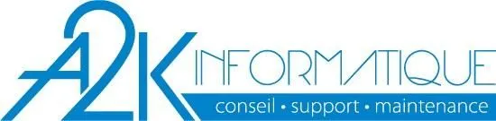

Expérience
Stages et missions réalisés au cours de ma formation — du développement web à l'administration système et la cybersécurité.

Stage — Novo Nordisk
Entreprise pharmaceutique danoise fondée en 1923, spécialisée dans le traitement du diabète, de l'obésité et des maladies rares. Présence mondiale, engagée dans des pratiques durables et responsables.
Missions

Stage — A2K Informatique
Petite entreprise de services informatiques à Dreux (2011), spécialisée dans le conseil, la maintenance et la cybersécurité. Accompagnement de TPE/PME locales avec une approche de proximité.
Missions
Stage — ADM Mécanique
ADM (Applications et Développements Mécaniques), basée à Lucé, est spécialisée depuis 20 ans dans la mécanique de précision pour l'aéronautique, la défense et le médical. Certifiée EN9100.
Missions

4.5.6 Skin
Marque de soins fondée en 2019, première au monde à proposer une skincare entièrement personnalisée pour les peaux mélaniques (phototypes IV, V, VI).
Missions

Coty Chartres
Leader mondial de la beauté fondé en 1904 — parfumerie, soins et maquillage. Marques : Calvin Klein, Marc Jacobs, Gucci, Rimmel London, CoverGirl.
Mission